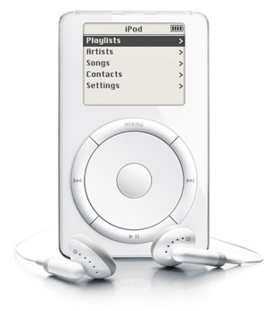
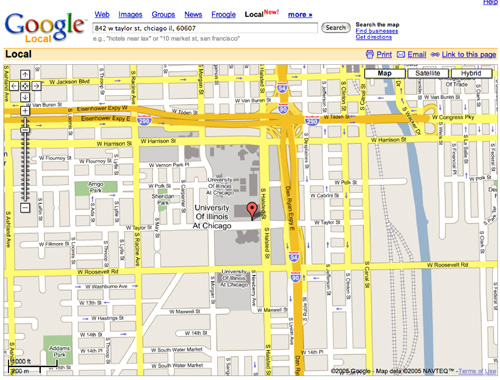

http://en.wikipedia.org/wiki/Transistor_radio
http://en.wikipedia.org/wiki/Transistor_radio(material from: Things that Make us Smart by Donald Norman, Information Anxiety by Saul Wurman, The Visual Display of Quantitative Information by Edward Tufte, Designing the User Interface 3rd Ed. by Ben Schneiderman, The Psychology of Human-Computer Interaction by Stuart Card and friends, Human-Computer Interaction 2nd Ed by Alan Dix and friends)
Principles:
1 - Recognize Diversity
| Advantages | Disadvantages | |
| Direct Manipulation | - visually presents task concepts - allows easy learning - allows easy retention - allows errors to be avoided - encourages exploration - affords high subjective satisfaction |
- may be hard to program - may require graphics display and a pointing device |
| Menu Selection | - shortens learning - reduces keystrokes - structures decision making - permits use of dialogue management tools - allows easy support of error handling |
- presents danger of many menus - may slow frequent users - consumes screen space - requires rapid display rate |
| Form Fillin | - simplifies data entry - requires modest training - gives convenient assistance - permits use of form management tools |
- consumes screen space |
| Command Language | - is flexible - appeals to 'power' users - supports user initiative - allows convenient creation of user-defined macros |
- has poor error handling - requires substantial training and memorization |
| Natural Language | - relieves burden of learning syntax | -requires clarification dialogue - may require more keystrokes - may not show context - is unpredictable |
Direct manipulation
can involve moving a mouse ro move a pointer on a screen and
clicking the mouse button to make selections to more modern
alternatives where the user uses a stylus or their finger to more
directly manipulate the interface itself.
In the early 2000s Sony started shipping the EyeToy. The concept
would improve with the PlayStation Eye and Microsoft's KINECT
which would show a different kind of direct manipulation without a
controller and without tactile feedback
http://www.dignews.com/platforms/ps2/ps2-reviews/eye-toy-antigrav-review/
Menu selection is
ubiquitous on computer interfaces today
Form fillin is
also ubiquitous on the web, making it easy for people who need
your data to get it in a form that they can easily process.
Command language
can be very useful in applications such as ImageMagick allowing
you to do a variety of simple or complex operations such as:
convert image.jpg rgb:image
convert night_club_orig.jpg -sigmoidal-contrast
4,0% night_club_fixed.jpg
convert piglet.gif -background white -flatten -colorspace Gray
-negate -edge 1 -negate -normalize \
-threshold
50% -despeckle -blur 0x.5 -contrast-stretch 0x50%
color-in_cartoon.gif
Natural language
is commonly used today when getting information via the phone on
movie times or airline flights. Services like 1-800-GOOG-411 can
be handy when you only have access to your phone and need to find
information on something in your area (location, phone number,
etc) - http://www.google.com/mobile/goog411/
and http://googleresearch.blogspot.com/2008/03/deploying-goog411.html.
Voice can be very successful in areas of limited/focused
vocabulary. More general natural language recognition is harder.
Talking to your cell phone solves part of the problem of noisy
rooms when you have a good microphone or set of microphones.
Having a connection to a large cloud-based data store solves part
of the problem of fixed vocabulary as the recognition problem can
be passed off to a more powerful computer to solve with access to
a larger and evolving store of knowledge about correct and
incorrect queries.
2- Eight golden rules of interface design
3-Prevent Errors
but perhaps most
importantly, evaluate the design at multiple stages during its
development
Locheed guidelines for design of power plant control rooms
Conditions for Optimum Problem Solving
Getting the User's Attention
Here is an email from
Bill Gates trying to install a piece of Windows software.
The evolution of the pocket music player is worth
spending a little time on, showing how capabilities and controls
evolve together. Physical controls with a simple mapping to their
function have been evolving into more generic controls .
Transistor Radios - in the mid 1950s a transistor radio
(back with the word 'transistor' sounded really cool) had
basically two controls: a knob to turn the radio on/off and
increase the volume, and a dial to change the station you were
listening to.
http://en.wikipedia.org/wiki/Transistor_radio
Walkman - 20 years later in the late 1970s the move from
a portable radio, where you could only choose which station you
could listen to, to being able to choose which cassette tape to
listen to was a big leap. The physical controls now needed to let
you eject the cassette, control volume, play, pause, fast-forward,
rewind. If you had an advanced one you could switch to the other
side of the tape without taking it out and putting it back in the
other way, or fast-forward to the beginning of the next song.
http://pocketcalculatorshow.com/walkman/sony/
fast forward another 20 years to the iPod in 2001 and
the basic controls for playing music on an ipod or similar mp3
player are not all that different, but now you are carrying much
more music around with you so there are now more controls to help
you get to the music you want to play.

Within another decade the physical controls would almost
completely disappear in favor of a touch / multi-touch interface
and vastly more storage, making the navigation issues much more
prominent.
It is also good to think about the kind of feedback
these devices give you about their current state. With the
transistor radio the controls themselves give you feedback on
their state: the volume knob has numbers on it to tell you how
loud is, and the frequency dial has numbers to tell you what you
are tuning into.
On the Walkman the button you press would push in so you
have immediate feedback about what mode the device is in. To tell
where you are in the cassette you could look through the little
window and see how much tape has already played through.
On an iPod all of the feedback is coming to through the
LCD screen.
Another good example is a look back to the olden days of recording
video. Early VHS Video Cassette Recorders (VCR) in the late 1970s
had physical controls and the remote control had only a single
button (pause/play) and was connected by a 20 foot cable. Today
its almost impossible to use a home video device without the
remote control.
The controls are broken up into three zones, each with
different physical controls. The basic controls for turning on the
device, playing/recording a tape, and recording/playing a tape are
pretty easy to use and still somewhat familiar today, though the
commonly used icons had not been invented then. The two big knobs
for changing the TV channel were very common then and pretty easy
to use (remember this was before cable TV existed and there was
just local over the air broadcast on VHF and UHF.) Then there was
the clock and the timer, which were as difficult to set as any
digital clock.
http://www.totalrewind.org/vhs.htm


Mapquest vs Google Maps


Guidelines for Public Access Terminals